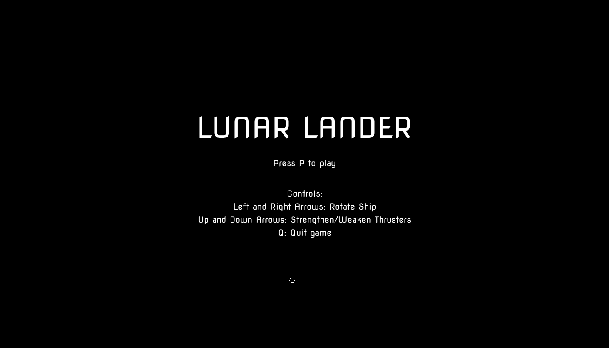

loading…
aayala4's Lunar-Lander-Python ported to Culebra, running here as WebAssembly.
Controls
- P
- start a round
- ← → / H L
- rotate the hull (it spawns pointing sideways, so level it first)
- ↑ ↓ / K J
- strengthen and weaken the thrusters
- D
- demo mode on and off — the autopilot flies, or hands back; from the title screen it starts a round it flies
- Q
- back to the title screen
- F
- toggle fullscreen
Gamepad
- Left stick / D-pad ← →
- rotate the hull
- RB
- strengthen thrusters
- LB
- weaken thrusters
- A
- start a round
- B
- back to the title screen
- X
- demo mode on and off
- Y / Menu
- toggle fullscreen
Landing
Put both feet down under 12 units of vertical speed and 25 of horizontal for a good landing, worth 50 points and 50 units of fuel back. The flattened pads marked 2x through 5x multiply the score, and the narrower the pad the more it pays. Come in faster and it is a hard landing or a crash, and a crash costs 100 fuel. When the tank empties, the game is over.